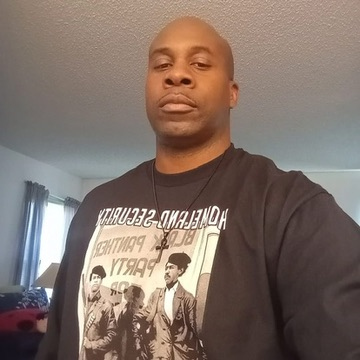

Community advocate · Founder, Red Alliance for Justice
Every neighborhood deserves its fair share.
For nearly twenty years, Anthony J. Brown has worked to make sure Jacksonville's Northside gets the same basics as everywhere else: safe streets, sewer lines, good jobs, and a City Hall that keeps its word.

Stay informedUpdates on the issues facing our neighborhoods.
Meet Anthony
A neighbor who shows up, and keeps showing up.
Anthony J. Brown has organized in Jacksonville since 2006. He founded Red Alliance for Justice, a community group that meets every month in New Town. It works to repair neighborhoods shaped by redlining, the 1968 consolidation, and decades of uneven city investment.
He served as co-chair of the Economic Committee and on the executive board of the NAACP Jacksonville Branch. He has also founded youth and community programs including Soul Fresh, Students to Troops, Operation Tiger Paw, and Restoration of Pride.
Through his program Tony's Tangent and the panel show Political Bombcast, Anthony has taken residents street by street through the city's history and its budget. He shows where the investment went and where it didn't. His belief is simple: when we improve our zip codes, we improve all of Jacksonville.
Priorities & promise tracker
Seven fights for the Northside
Where Anthony stands on each issue, and where the City of Jacksonville stands on the promises it has already made. Select a fight to see the record.
Neighborhood focus
Durkeeville: growth that keeps families in place
In June 2025 the City of Jacksonville finished a revitalization plan for historic Durkeeville, around Myrtle Avenue and Kings Road beside Edward Waters University. It lists more than 40 projects and ties in over $400 million in public investment.
The plan's guiding idea is withintrification: revitalization led by the people who already live there. Anthony was making that case in 2021. His priority is making sure the families who held this neighborhood together are the ones who benefit, through homeownership, Black-owned storefronts on Myrtle and Kings, and protection from being taxed out.
The plan, phase by phase
Sources: City of Jacksonville Planning Department · Jax Today
A record of advocacy
Two decades on the Northside
Before anyone asked him to, Anthony was at the meetings, on the corners, and in front of the camera.
- 2006
Begins organizing
Starts nearly twenty years of community advocacy on Jacksonville's Northside.
- 2021
Maps redlining for his neighbors
Lays the city's old lending maps over today's neighborhoods, and joins urban planner Ennis Davis on remedies.
- 2022
Challenges the district lines
As NAACP economic committee co-chair, speaks out on the city's redistricting map. Red Alliance holds its first town hall.
- 2025
Fights for a Neighborhood Bill of Rights
Leads Red Alliance in pressing to codify basic-service rights and to repurpose a morgue built on a residential Brentwood street.
In his words
On the record
“We want to see legislation with more teeth that would restore and give the people in this community improvement in infrastructure, the ability for capital infusion, and opportunity for affordable housing.”
“Jacksonville is a microcosm of the country. The districts that Blacks represent are the worst in the city in terms of all the community social indicators.”
Media
Watch Anthony
Get involved
This work takes all of us
Attend
Come to a meeting
Red Alliance for Justice meets every third Thursday at True Church of the Living God on State Street in New Town.
Next meeting: —
Volunteer
Lend a hand
Knock doors, document problems on your block, help at town halls, or share what you know about your neighborhood's history.
Sign up to volunteerVote
Make sure you're registered
Jacksonville elects its mayor, sheriff, and all 19 City Council members in 2027. Check your registration with the Duval County Supervisor of Elections.
Check registration